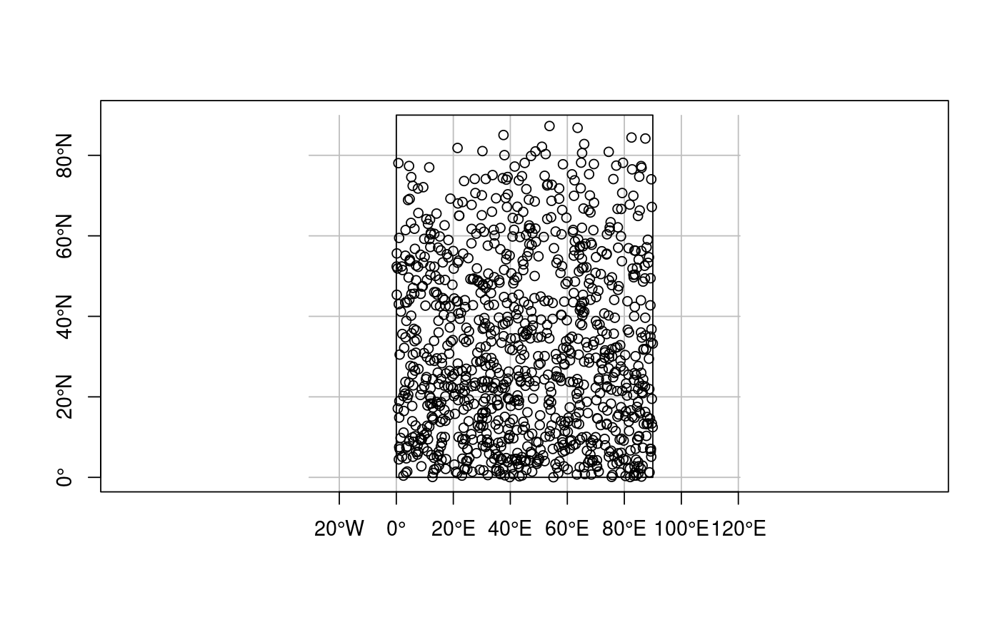
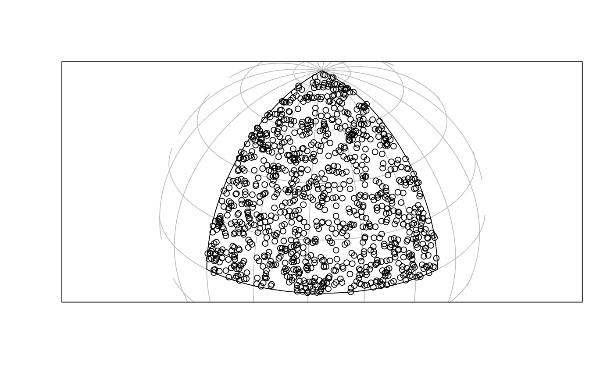

sample points on or in (sets of) spatial features
st_sample(x, size, ..., type = "random")
| x | object of class |
|---|---|
| size | sample size(s) requested; either total size, or a numeric vector with sample sizes for each feature geometry. When sampling polygons, the returned sampling size may differ from the requested size, as the bounding box is sampled, and sampled points intersecting the polygon are returned. |
| ... | ignored, or passed on to sample for |
| type | character; indicates the spatial sampling type; only |
if x has dimension 2 (polygons) and geographical coordinates (long/lat), uniform random sampling on the sphere is applied, see e.g. http://mathworld.wolfram.com/SpherePointPicking.html
x = st_sfc(st_polygon(list(rbind(c(0,0),c(90,0),c(90,90),c(0,90),c(0,0)))), crs = st_crs(4326)) plot(x, axes = TRUE, graticule = TRUE)plot(p <- st_sample(x, 1000), add = TRUE)#>x2 = st_transform(st_segmentize(x,1e4), st_crs("+proj=ortho +lat_0=30 +lon_0=45")) g = st_transform(st_graticule(), st_crs("+proj=ortho +lat_0=30 +lon_0=45")) plot(x2, graticule = g)p2 = st_transform(p, st_crs("+proj=ortho +lat_0=30 +lon_0=45")) plot(p2, add = TRUE)plot(st_sample(x, 1000), add = TRUE)x = st_sfc(st_polygon(list(rbind(c(-180,-90),c(180,-90),c(180,90),c(-180,90),c(-180,-90)))), crs=st_crs(4326)) p = st_sample(x, 1000)#>#> Geometry set for 1 feature #> geometry type: MULTIPOINT #> dimension: XY #> bbox: xmin: -178.7123 ymin: -48.54231 xmax: 173.4171 ymax: 5.92985 #> epsg (SRID): NA #> proj4string: NA#>ls = st_sfc(st_linestring(rbind(c(0,0),c(0,1))), st_linestring(rbind(c(0,0),c(.1,0))), st_linestring(rbind(c(0,1),c(.1,1))), st_linestring(rbind(c(2,2),c(2,2.00001)))) st_sample(ls, 80)#> Geometry set for 4 features (with 1 geometry empty) #> geometry type: MULTIPOINT #> dimension: XY #> bbox: xmin: 0 ymin: 0 xmax: 0.09607244 ymax: 1 #> epsg (SRID): NA #> proj4string: NA#>#>#>#>